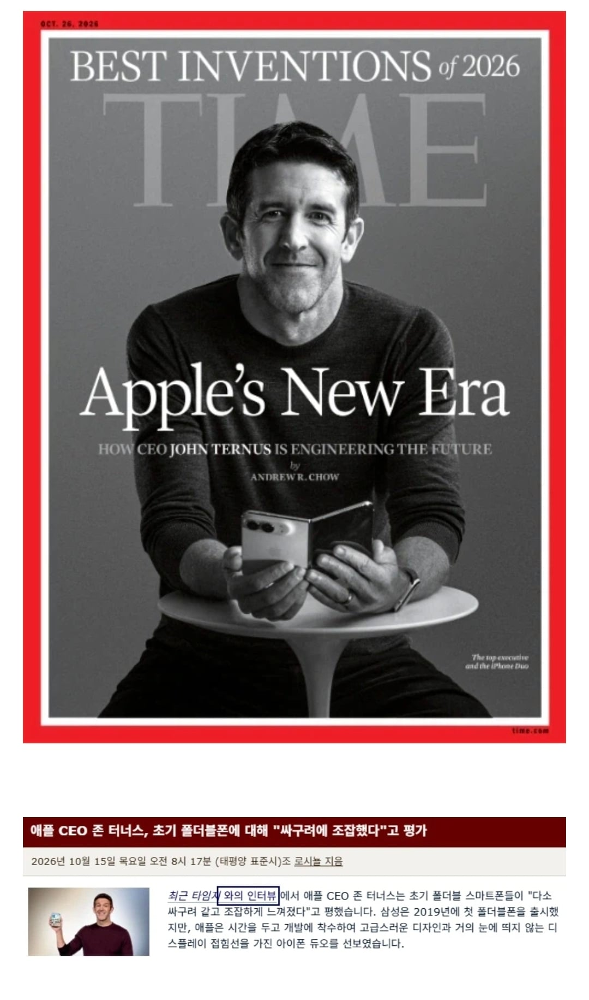
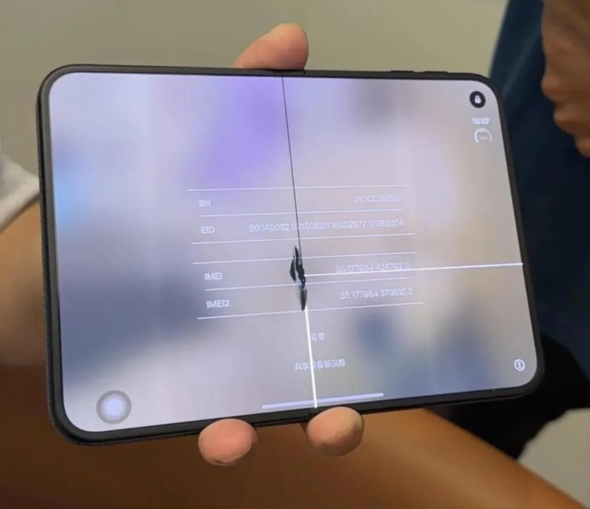
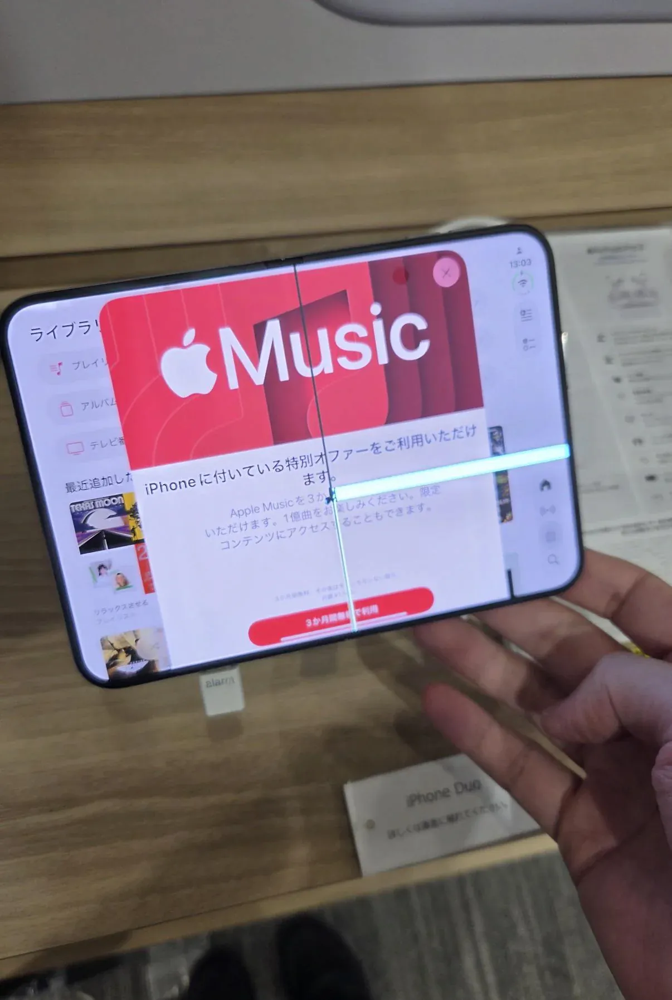

병신아 크랙이나 해결하고...



병신아 크랙이나 해결하고...
폴드1때 이물질들어가서 화면 깨지는문제랑 상황이 비슷하네
그래서 쟤 게이임?
다같은부위가 작살나는거보면 설계문제인건가?
애플의 설계는 세련됐는데 사용자가 그렇지 못해서 생긴 사소한 이슈임 ㅇㅇ 아무튼 그럼
음음 팀쿡 후계자 답구나
삼성 폴드1때 힌지에먼지 들어가면 저렇게 많이 깨졌음
그래서 힌지에 마개를 끼워서 해결했음
폴드8도 액정보다 높게 먼지마개가 있는데
아이폰듀오는 이 마개가 디자인이 별로라며 없앰
이부분을 두고 역시 애플의 완벽주의라며 찬양했음
근데 저꼴난듯?
것보다 위치보면 전부 요철있는 자리라 요철자체가 문제있어보이는데
그냥 생각임 다른부분에 먼지낀건 상관없어도 요철부에 먼지끼면 그부분에서문제생기니까
갤폴드도 똑같이 저정도 부분에서 나가긴해서
공식입장나오겠지뭐
우아하지 않다고 쿨러 뺴던 놈들 어디 안가는구나
어쩌라고 통쾌하게 잘만살거면서
남이 만든 장르 따라가면서 장르 창시자 1세대를 까는건 뭔 보법임???
그걸보고 수령님 말이 맞습네다 박수치는 앱등이까지 콜라보 완벽하노 ㅋㅋㅋㅋ
니네들은 폴더블폰이 뭔지도 몰랐던 시기지.
근데 산 지 며칠 안 된 거 아님? 근데 저렇게 일정하게 나갈 정도면 테스트 단계에서 안 잡히나...?
삼성에서 디스플레이 모듈 납품할때는 다 테스트하고 납품했을테고, 애플이 시스템 테스트 노하우가 없어서 설계 후 놓쳤을 수도 있음
대체 왜 화난거임 얘들은?
니들이 선택한 폰이다. 악깡버.
애플스토어 가면 전시품 폰에는 의도적으로 누가 낸듯한 기스가 항상 있었음
내구성 테스트 같은거 하는 느낌의 기스
저거도 누가 시제품 존나쎄게 눌러서 그런걸 수 있겠다는 생각이 듬
폴드8이랑 같은 디플인데 저거만 저러는게 이상하잖어
? 폴드도 디스플레이가 문제라기보단 그 뒤에 힌지가 문제였었어 애플은 자체적으로 개발했다했고
애쓴다
힌지가 달라요 ㅋㅋㅋ
애플의 듀오는 혁신이 아니라, 따라하기, 베끼기, 패스트팔로워 전략이다. 애플의 기존 전략과는 전혀 다르지 따라서 애플이 점점 병신이 되간다는 증거다. 입만 털줄알지 .. 그놈의 ui/ux 원툴이고... 요즘 들어서는 안드계열보다 그다지 나을게 하나도 없다
히ㅗ
아직도 혁신의 아이콘 어쩌고 하는거 보면
아직도 잡스의 그림자에서 못 나오고 있다
저거 삼성이 납품했다하더만 ㅋㅋㅋㅋ
삼엽충들 선동날조보소
삼성은 저기 깨지는 경우 안뜨는데 애플만 뜨는거면 디스플레이가 아닌 본체설계문제지
디스플레이만 삼성이 납품이고 힌지는 애플 독자설계인데 ㅋㅋㅋㅋ 이런식으로 물타기하는 앱등이 갬성 지리고
제발 자살좀
알고 지끼자
닉값
뭐지 이 개병신은?
컨셉이에요?
옛날게 싸고 조잡했다면 저건 비싸고 조잡한거겠네 ㅋㅋㅋ
정말 통쾌했어요!
삼성이 불량디스플레이 납품했네
이런게 허위사실 유포임
납품할때 퀄 받고 넘기는데 디스플레이사 불량으로 단정짓는 근거가 뭐임?
Team Cock
통쾌하다 진짜...
아, 디스플레이는 삼성꺼라곸ㅋㅋㅋ

파킨
ㅋㅋㅋㅋㅋ
조립라인에 문제있는듯
ㅎㅎ 쉽지않죠? ㅋㅋ